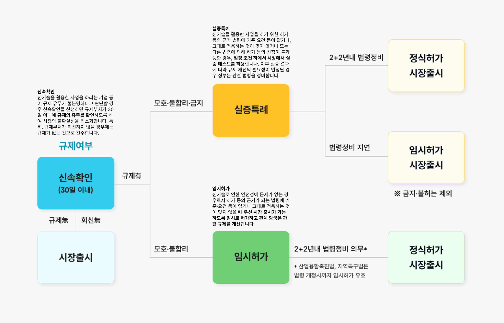
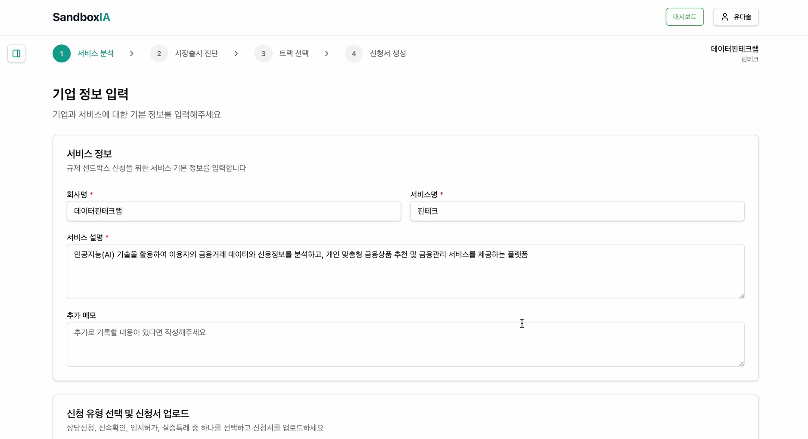
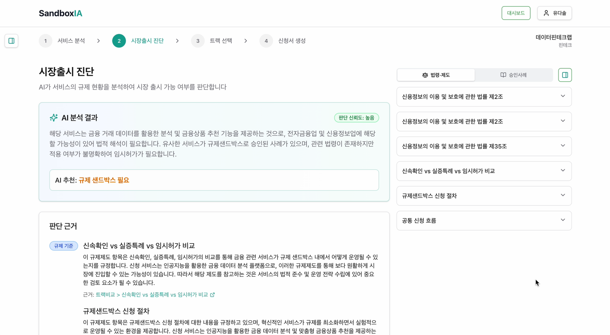
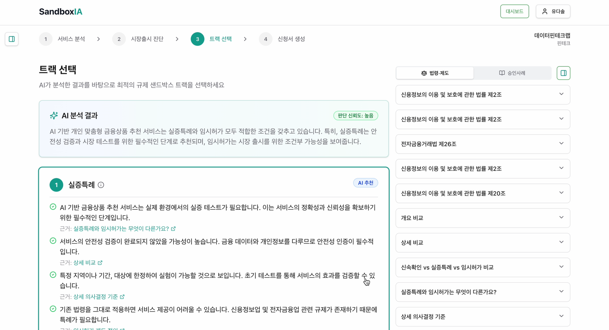
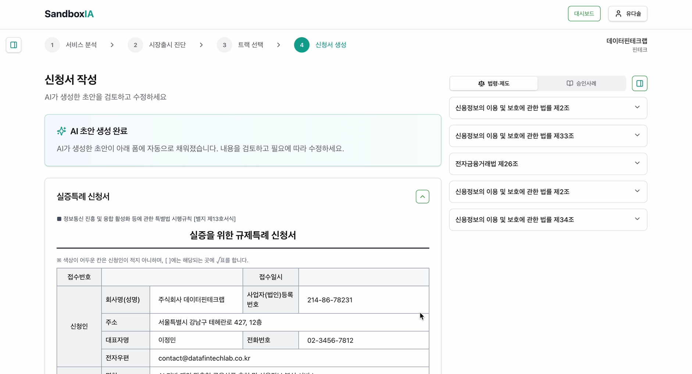

AI 멀티 에이전트 기반
규제 샌드박스 컨설팅 지원 시스템
Team 1st Law SandboxIA | 2026.03
기획 목적
문제 정의 · 타겟 사용자
목표
KPI · 핵심 가치 제안
기술 스택
Frontend · Backend · Infra
서비스 기능 · 유저 플로우
4-Step 파이프라인 · Step 1~4 상세
기능 구현 기술
시스템 아키텍처
RAG 평가
R1 · R2 · R3 성능 평가
Agent 아키텍처
LangGraph 멀티 에이전트 파이프라인
서비스 완성
시연 · 핵심 이슈 해결
배포
Docker · CI/CD · 협업
회고 · 한계
프로젝트 회고 · 향후 과제
3개 트랙(신속확인/임시허가/실증특례)마다 양식, 필수 항목, 법적 논점이 모두 다름.
컨설턴트는 기업 기술 이해 + 관련 규제 법령 탐색 + 논리 구성을 동시에 수행
과거 승인 사례 PDF를 수작업으로 검색/분석. 쟁점 법령, 논리 전개 방식을 일일이 파악해야 하며 정보가 파편화
2026년 산업융합촉진법 개정으로 샌드박스 수요 증가 전망. 컨설턴트 1인당 처리량은 늘지만 조사/작성 시간은 고정

Target User
규제 샌드박스 신청 컨설턴트
4단계 AI 파이프라인
서비스 구조화 → 대상성 판단 → 트랙 추천 → 신청서 초안
멀티 에이전트가 순차적으로 분석 · 생성 수행
3-RAG 기반 도메인 검색
승인 사례 281건 + 11개 법률 + 제도 절차를 의미 기반으로 검색
유사 사례 매칭 · 관련 법령 자동 연결
신청서 초안 자동 생성
트랙별 양식에 맞춰 DOCX 초안 생성 · 편집 가능
AI는 보조 역할 — 최종 판단은 컨설턴트가 결정
기업 서비스 접수 · 구조화
Service Structurer Agent컨설턴트가 기업의 HWP/PDF 신청서를 업로드하면, 전담 에이전트가 비정형 문서를 파싱하여 통일된 구조(Canonical Structure)로 변환합니다.
샌드박스 대상성 검토
Eligibility Evaluator Agent해당 서비스가 규제 샌드박스 신청 대상인지 전담 에이전트가 판단합니다. 키워드 스크리닝 후 3개 RAG 병렬 검색으로 근거를 수집하고, LLM이 종합 판정합니다.
적합 트랙 선정
Track Recommender Agent전담 에이전트가 3개 트랙(실증특례/임시허가/신속확인)을 체크리스트 기반 스코어링(0~100)하고, 유사 사례 매칭 + 법령 도메인 페널티를 반영하여 추천합니다.
신청서 초안 작성
Application Drafter Agent전담 에이전트가 추천 트랙의 양식 스키마에 맞춰 초안을 자동 생성합니다. Tiptap 에디터로 편집하고 DOCX로 다운로드합니다.
| 단계 | R1 제도/절차 | R2 승인사례 | R3 법령 | 주요 용도 |
|---|---|---|---|---|
| 1 구조화 | - | - | - | HWP 파싱 전용 |
| 2 대상성 | ✓ | ✓ | ✓ | 병렬 검색 → 종합 판단 |
| 3 트랙 | ✓ | ✓ | ✓ | 스코어링 + 페널티 + 사유 |
| 4 신청서 | ✓ | ✓ | ✓ | 작성 가이드 + 사례 참고 |
트랙 정의, 신청 절차, 심사 요건 · 10 카테고리 × 4 트랙 × 6 부처
구조화 + enriched · 서비스 설명 기반 의미 검색
조 단위 1,188 청크 · 차단 규제 탐지
UX 핵심
SSE 실시간 진행률 사이드바 레퍼런스 컨설턴트 Override DOCX 다운로드기업이 업로드한 HWP 신청서(1~4장)와 컨설턴트 메모를 분석하여, 이후 모든 에이전트가 공통으로 사용하는 Canonical Structure (통일 JSON)를 생성합니다.
Processing Flow

출력: Canonical Structure
설계 원칙 — HWP 파서 추출값(체크박스, 서명, 날짜)은 LLM 출력보다 우선 적용
서비스가 규제 샌드박스 신청 대상인지 판단합니다. 키워드 스크리닝 → RAG 검색 → LLM 종합 판단 → 근거 생성의 4단계 파이프라인으로 구성됩니다.
Data Flow

판정 결과 (3가지)
핵심 설계 원칙 — AI는 보조 역할. 최종 판단은 컨설턴트가 직접 선택
3개 트랙(실증특례/임시허가/신속확인) 중 가장 적합한 트랙을 추천합니다. 유사 사례 검색 → 체크리스트 스코어링 → 트랙 정의 조회 → 추천 사유 생성의 4단계로 동작합니다.
Data Flow
1. 실증 테스트 필요성 2. 안전성 미검증
3. 제한 범위 가능 4. 특례 필요 5. 유사 사례
1. 안전성 검증 완료 2. 허가 불가
3. 시장 출시 목적 4. 이용자 보호 5. 유사 사례
1. 규제 불명확 2. 기존 법령 해석 가능
3. 신기술 해당 4. 빠른 확인 필요

출력 구성
추천된 트랙에 맞는 신청서 양식을 자동으로 채워 초안을 생성합니다. 사실 데이터는 그대로 복사하고, 서술형 필드만 LLM이 작성합니다.
End-to-End Flow

| 트랙 | 양식 | 주요 섹션 |
|---|---|---|
| 신속확인 | fastcheck 1~2 | 서비스 개요, 규제 쟁점, 질의 |
| 임시허가 | temporary 1~4 | 사업 개요, 특례 범위, 안전성 |
| 실증특례 | demo 1~4 | 실증 계획, 규모, 안전 방안 |
3종 데이터 분리 설계
모든 에이전트가 공용으로 사용하는 핵심 검색 인프라. 팀원 3명이 각 1개씩 담당 구축.
데이터: ICT 규제샌드박스 제도 문서
구조: 10개 카테고리 x 4개 트랙 x 6개 부처
필터: track + category + ministry
기능: 트랙 정의, 제출요건, 심사기준, 트랙 비교
사용: Agent 2, 3, 4
데이터: 승인/반려 사례 281건
구조: 1건 = 1문서 (청킹 없음)
보강: GPT-4o로 50건 enriched
기능: 유사사례 검색, 승인 패턴 분석, 중복 제거
사용: Agent 2, 3, 4
데이터: 국가법령정보센터 API 11개 법률
구조: 조(article) 단위 청킹, 6개 도메인
청크: 1,188개 (평균 480자)
기능: 도메인별 법령 검색, 차단 규제 탐지
사용: Agent 1, 2, 3
공통 인프라
147개 청크(평균 763자), 30개 질의-정답 쌍 기반 단계별 최적화
임베딩 모델
3종 비교
검색 전략
Vector / Hybrid / Reranking
생성 모델
Faithfulness 검증
| 모델 | 차원 | MH-R | MRR | Latency |
|---|---|---|---|---|
| E0 3-small | 1536 | 66.7% | 72.2% | 197ms |
| E1 3-large | 3072 | 73.3% | 88.3% | 151ms |
| E2 Solar | 4096 | 71.7% | 74.8% | 603ms |
핵심: E1이 성능·속도 모두 1위. 규제 전문 용어에 고차원 임베딩이 효과적.
| 전략 | MH-R | MRR | 비고 |
|---|---|---|---|
| Vector Search | 73.3% | 88.3% | 기본 |
| Hybrid (50/50) | 65.0% | 66.7% | −21.6%p |
| Hybrid (80/20) | 68.3% | 78.3% | −10.0%p |
| + Query Rewriting | 73.3% | 85.8% | 효과 미미 |
| + Reranking | 90.0% | — | 19.6s |
핵심: Hybrid/Rewriting 효과 없음. Reranking +16.7%p이나 129배 지연으로 실시간 부적합.
R1 최종 확정: E1 + Vector Search + gpt-4o-mini
승인 사례 281건(1건=1문서, 청킹 없음)을 대상으로 데이터 전략부터 구성 튜닝까지 4단계 최적화
데이터 전략
structured / enriched / hybrid
임베딩 모델
4종 (API 2 + Local 2)
생성 모델
4종 RAGAS 비교
구성 튜닝
top_k & threshold
structured: 정형 필드 / enriched: GPT-4o 보강 / hybrid: 원문+정형
enriched: GPT-4o가 핵심 정보 추출하여 보강. Recall +7.3%p
| 모델 | MH-R | MRR | Neg |
|---|---|---|---|
| E0 3-small | 0.867 | 0.950 | 0.200 |
| E1 3-large | 0.867 | 0.928 | 0.217 |
| E4 BGE-M3 | 0.883 | 0.933 | 0.200 |
| E5 KURE-v1 | 0.850 | 0.917 | 0.233 |
핵심: 모델 간 차이 ~2.5%p 소폭. E0 MRR 1위이나, R1/R3과 임베딩 모델 통일 필요 → E1 채택.
| 모델 | Faith. | Relev. | Bullet | P50 |
|---|---|---|---|---|
| gpt-4o | 0.975 | 0.718 | 0.817 | 2.9s |
| gpt-4o-mini | 0.957 | 0.715 | 0.789 | 9.0s |
| gpt-4.1 | 0.942 | 0.627 | 0.844 | 3.6s |
| gpt-4.1-mini | 0.919 | 0.653 | 0.828 | 4.2s |
| top_k | MH-R | Neg | Ans.Rel |
|---|---|---|---|
| k=3 | 0.717 | 0.083 | — |
| k=5 | 0.867 | 0.200 | 0.718 |
| k=7 | 0.933 | 0.233 | 0.634 |
| k=10 | 0.950 | 0.317 | — |
Score threshold: 분포(0.08~0.58) 너무 좁아 불필요 확정
R2 최종 확정
국가법령정보센터 API에서 11개 법률 수집, 청킹 → 임베딩 → 벡터DB/Hybrid 3단계 최적화
청킹 전략
9개 조합 (C0~C8)
임베딩 모델
6종 (API 3 + Local 3)
벡터DB & Hybrid
Chroma vs Qdrant
| 전략 | 단위 | 설명 | MH-R | Recall | 청크 수 |
|---|---|---|---|---|---|
| C0 | 항 | 기준점 | 0.700 | 0.650 | 3,184 |
| C1 | 항 | +prefix+hybrid | 0.767 | 0.700 | 3,196 |
| C4 | 조 | 기본 | 0.833 | 0.800 | 1,082 |
| C8 | 조 | +prefix+작은 청크 | 0.867 | 0.833 | 1,188 |
핵심: 조 단위가 항 단위보다 MH-R +13%p. 같은 조의 항 경쟁 제거.
| 모델 | 차원 | MH-R | MRR | P95 | 비용 |
|---|---|---|---|---|---|
| E0 3-small | 1536 | 0.867 | 0.622 | 167ms | $0.02 |
| E1 3-large | 3072 | 0.967 | 0.844 | 207ms | $0.13 |
| E2 Solar | 4096 | 0.967 | 0.857 | 939ms | $0.20 |
| E4 BGE-M3 | 1024 | 0.933 | 0.878 | 209ms | 무료 |
| E5 KURE-v1 | 1024 | 0.933 | 0.851 | 96ms | 무료 |
핵심: E1이 E0 대비 MH-R +10%p. 법령 의미 밀도가 높아 고차원 임베딩 효과적.
| 설정 | Sparse | MH-R | MRR | P95 |
|---|---|---|---|---|
| Chroma Dense | - | 0.933 | 0.851 | 155ms |
| Qdrant+BM25 | BM25 | 0.883 | 0.778 | 316ms |
| Qdrant+SPLADE | SPLADE | 0.967 | 0.828 | 254ms |
핵심: SPLADE WordPiece가 한국어 서브워드 일관 분해. BM25 대비 +8~13%p MRR.
R3 최종 확정: C8 + E1 + Qdrant SPLADE
시연 영상
▶ 시연 영상 재생
Vercel
Next.js 16 SSR + Edge Runtime
AWS EC2 + Docker Compose
FastAPI + Qdrant · ghcr.io 레지스트리
Supabase Cloud
PostgreSQL + Auth + Storage · RLS 보안
보안
법령 조문은 항(paragraph) 단위가 너무 짧고, 같은 조의 항들이 서로 경쟁하여 검색 누락 발생. 한국어 BM25는 띄어쓰기 기반 토큰화로 서브워드 분해 불가.
국가법령정보센터 API에서 11개 법률 수집 후 3단계 실험:
조 단위가 항 단위 대비 MH-R +13%p. SPLADE의 WordPiece 토크나이저가 한국어 서브워드 일관 분해. 최종 MH-R 96.7%.
승인 사례 281건 중 구조화 가능 데이터가 제한적. 법령 데이터는 조문 구조 불일관. 도메인 편중(ICT 과다, 바이오 부족).
GPT-4o로 50건 보강(enriched) + 30개 쿼리 클러스터 분석으로 gold_cases 전수 조사. 법령은 조 단위(C8) 청킹 + 메타데이터 보존.
Enriched로 MRR 0.91→0.95. Score threshold(0.3)는 52% 필터링으로 유해 → 사용하지 않음.
RAG 공통 교훈
R2와 R3 모두 데이터 정제와 청킹 전략이 임베딩 모델 교체보다 큰 성능 향상을 가져왔다. “한 번에 하나의 변수만 변경” 원칙으로 재현 가능한 최적 구성 도출.
HWP는 비공개 바이너리 포맷이며, 기업마다 양식/구조가 상이. Python에 안정적인 HWP 파서가 없어 표준 라이브러리로는 텍스트 추출 불가.
olefile로 OLE 컨테이너 파싱 → zlib 압축 해제 → UTF-16LE 디코딩 → 정규식 패턴 매칭으로 50+ 필드 추출. 8개 필드 그룹 병합(first-win 전략)으로 최대 4개 HWP 통합.
11종 신청서 양식을 안정적으로 파싱. HWP 바이너리 구조에 대한 깊은 이해와 역공학 경험 축적.
4개 Agent가 각각 입력 데이터를 다르게 해석하면 판정/추천/초안 간 불일치 발생. Agent 2가 “의료기기”로 판단했는데 Agent 3이 “헬스케어”로 인식하는 등의 문제.
Canonical Structure(통일 JSON 스키마) 설계. Agent 1이 생성한 구조화 데이터를 나머지 3개 Agent가 동일한 입력으로 공유. 서비스명, 도메인, 핵심기술 등 필드를 표준화.
Agent 간 데이터 불일치 해소. 새 Agent 추가 시에도 Canonical Structure만 참조하면 되어 확장성 확보.
Agent 분석이 30초~2분 소요되는데, 사용자에게 진행 상태를 전혀 보여줄 수 없었음. 응답 전까지 빈 화면만 표시되어 UX가 매우 불량.
LangGraph astream으로 노드별 이벤트 스트리밍 → progress_store에 단계별 상태 저장 → FastAPI SSE 엔드포인트로 클라이언트에 실시간 전달. 프론트엔드에서 단계별 프로그레스 바 표시.
“어떤 Agent가 지금 무엇을 하고 있는지” 실시간 표시. 체감 대기시간 크게 감소.
ChromaDB Dense 검색만으로는 법령 조문의 키워드 매칭이 부족. 한국어 BM25는 띄어쓰기 기반 토큰화로 서브워드 분해 불가.
Qdrant + SPLADE Hybrid Search 도입. BaseVectorStore ABC로 추상화하여 ChromaDB/Qdrant 교체 가능한 설계. Docker Compose로 Qdrant :6333 통합.
SPLADE가 BM25 대비 MRR +8~13%p. R3 최종 MH-R 96.7%, Recall 91.7% 달성.
입력 문서 부족 부분 판단 기능 필요
✓ Agent 1 Uncertainty Detector로 미비 항목 자동 탐지 구현
비용/시간/퀄리티 기준으로 RAG 성능 평가
✓ R2 체계적 평가 파이프라인 수립 · Latency/Faithfulness/Relevancy 정량 비교
유저 개인화 페이지 · 대시보드 구성
✓ 프로젝트별 대시보드 + Step 1~4 진행 상태 관리 UI 구현
멀티 에이전트 실서비스 적용 경험
LangGraph 4개 Agent 구현, Canonical Structure로 에이전트 간 데이터 흐름 설계
도메인 전문성 학습
규제 샌드박스 3개 트랙 요건/절차 차이 학습, AI 보조 도구 UX 설계 경험
AI 도구 활용 협업
CodeRabbit + Claude Code + MCP 서버로 생산성 향상, Subagent를 활용한 RAG 평가 파이프라인 구축
실사용 데이터 부족
실제 컨설턴트 피드백 없이 내부 테스트만 수행. 실 업무 환경에서의 유용성 검증 필요.
승인 사례 데이터 한계
281건 중 구조화 가능 데이터가 제한적. 도메인 편중(ICT 과다, 바이오 부족) 존재.
입력 문서 완전성 검증 미비
Uncertainty Detector가 누락 항목을 탐지하나, 항목별 충분성 판단 기준이 부재.
전략 자문 & QA 리스크 체크 Agent
유사 사례 클러스터링 → 승인 패턴 추출 + 심사자 관점 리스크 시나리오 생성
실서비스 배포 & 피드백 루프
클라우드 서버 배포 + 사용자 피드백 수집 → RAG 데이터 및 프롬프트 개선
승인 사례 데이터 확충
도메인 균형 확보 + 신규 사례 지속 수집 자동화 파이프라인 구축
감사합니다
Team
1st Law SandboxIA
Repository
KernelAcademy-AICamp/4th_law_sandboxia